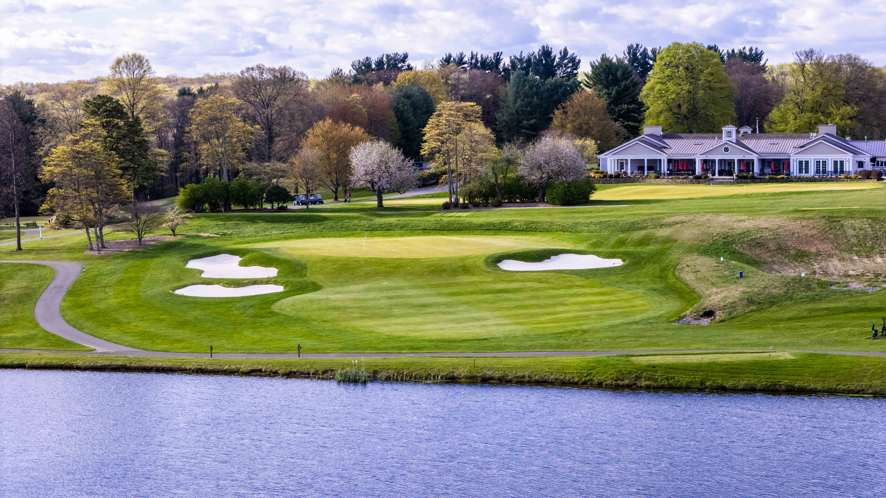
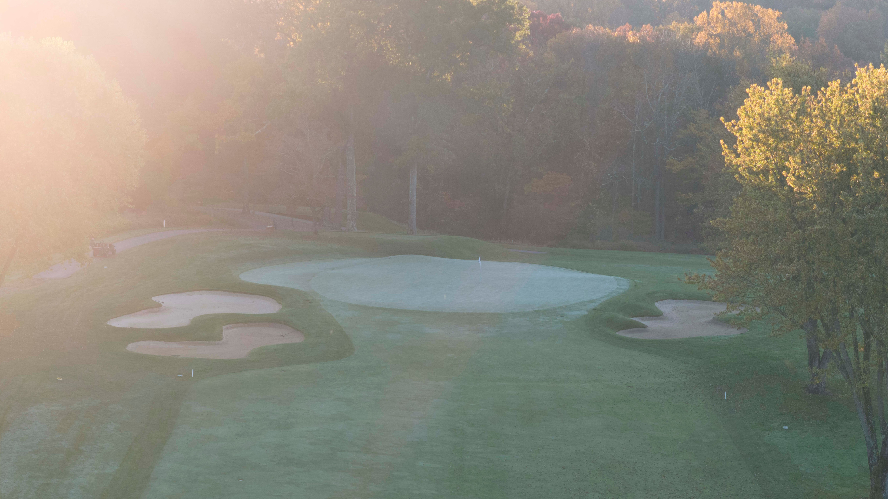
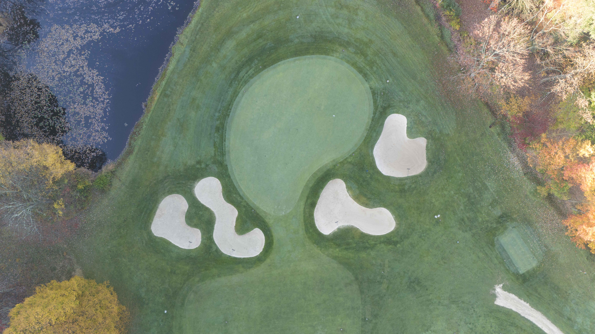

Mendham Golf & Tennis Club is in northern New Jersey, set on rolling terrain at the foot of the Morristown highlands. The course has long traded on its routing and quiet character, but decades of incremental tree growth, drainage band-aids, and bunker drift had softened the original strategic intent.
The Northeast Golf Company was engaged to author a comprehensive master plan: a single, sequenced document the club can execute over a multi-year horizon. The work is grounded in the existing routing — no holes are moved — but every green complex, bunker, and corridor has been revisited.
The plan was developed in close partnership with the club's Green Committee and superintendent, with field walks to understand how the property actually plays and maintains.
The plan was shaped around six work streams. Each could be sequenced independently so the club could phase capital across budgets without compromising the playing experience.
Below are two examples of completed work as part of the master plan process.
The work surrounding the 15th green largely involved redesigned bunkering to both add to the aesthetics and drama of the approach, as well as create more variety around the green.


Before AfterThis short par 4 was surrounded by bunkers and a slope to a water hazard, limiting variety in recovery shots around the green. Repositioned bunkers with expanded pitch areas reintroduce short game variety and provide a more open visual on the approach.


Before AfterOne of the final pieces of the master plan involved renovating the par 5 tenth hole. The hole had become long and repetitive to members through fairway narrowing, bunker shrinkage, and tree growth. The renovation plan involved removing trees for turf health and strategic angles, reorganized bunkering to provide greater risk-reward options into the green, and expanded fairway for increased lay-up options.
Focused on aesthetics, agronomy, and strategy. Click here to read more about the plan.
A handful of frames showcasing the completed work at Mendham Golf & Tennis.

.jpg)
.jpg)